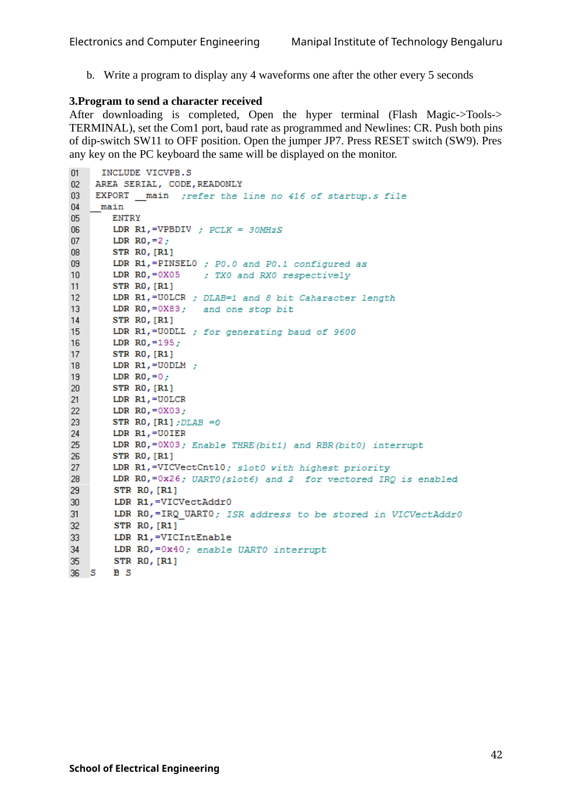

#include<lpc21xx.h>
void delay(void);
int main(void)
{
unsigned long int c=0xFF0000;
IO0DIR = c;
VPBDIV=2;
T0MCR=(1<<0)|(1<<2); //Generates interrupt and reset on match
T0MR0=1000000; //Loading match register value
T0PR=29; //Loading Prescalar register value
while(1)
{
IO0SET = c; // Turn ? LEDs
delay();
c-=0x10000;
IO0CLR = 0xFF0000; // Turn them ?
}
}
void delay(void)
{
T0TCR=(1<<0); //Starting Timer
while(!(T0IR&(1<<0))); //Waiting for interrupt
T0IR=(1<<0); //Clearing interrupt
T0TCR=(1<<1); //Reset Timer0
}Original manual image(s)
